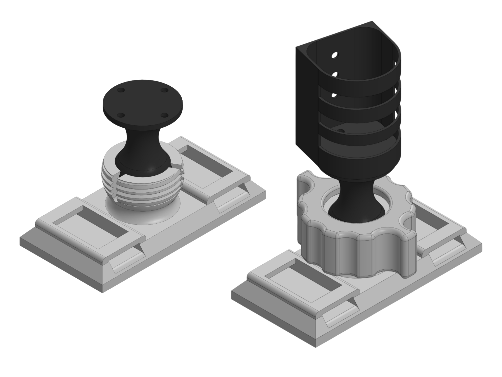
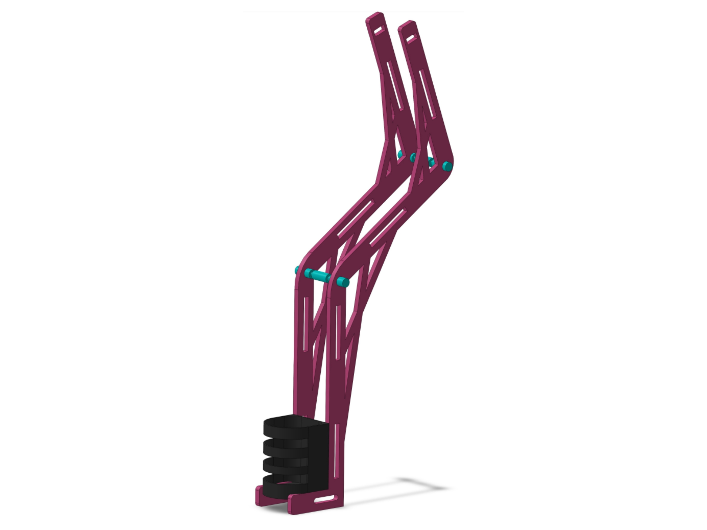

Detangulator 5000
Assistive haircare device for independent detangler application
Designed and prototyped a chair-mounted detangler sprayer that helps a client with cerebral palsy position and actuate spray with less effort, increasing independence in a daily self-care routine.




Project Description
In ME40, teams partnered with real clients to identify a daily-life challenge and prototype an assistive device solution. Our client, an 11-year-old with cerebral palsy, cares a lot about her hair and wants to maintain it more independently. She enjoys using detangler spray, but struggles to hold the bottle at the right distance while pressing the spray trigger due to limited range of motion and finger stiffness.
We designed a solution that keeps the bottle stable and close to the user, redirects spray to a targeted area using tubing, and enables low-effort actuation using a pull-string mechanism. The device can be mounted to a chair armrest using straps, allowing Dallas to adjust the nozzle position and control when spray is dispensed.
Iterative design process
- Problem framing: Interviewed the client and clarified the biggest friction points (aiming distance + trigger force).
- Market research: Looked at reach tools and remote sprayers to understand what already exists and why it falls short for this use.
- Requirements: Converted user needs into measurable targets (low force actuation, stable mounting, simple setup).
- Prototyping: Built early structures to explore mounting, reach, and actuation strategies.
- Refinement: Improved stability and usability; cleaned up actuation path, nozzle aiming, and setup steps.
Engineering skills used
CAD + mechanism design
Designed mounting + jointed positioning concept to balance adjustability with stability.
Rapid prototyping
Laser-cut acrylic structural parts and 3D printed custom mounts / holders.
Human-centered design
Translated client needs into requirements, then iterated based on usability and handoff feedback.
System integration
Combined positioning, actuation, fluid routing, and mounting into one consistent workflow.
Conclusions
This project taught me how much “small” details matter when you are designing for real people. Trigger force, setup steps, and how intuitive a mechanism feels can make or break usability. This project also showed me how necessary it was to prototype early and often; iterating through different design choices helped us find a solution that worked well for our client, and we wouldn’t have known what worked without building and testing it.
If I had more time / budget
- Swap string actuation for a simpler button/remote control (more intuitive, fewer snag risks).
- Redesign for a more compact form factor and improved durability (materials beyond acrylic).
- Create a universal mounting kit to fit a wider range of chair geometries.
- Improve tolerances and joints for smoother, longer-life adjustment.